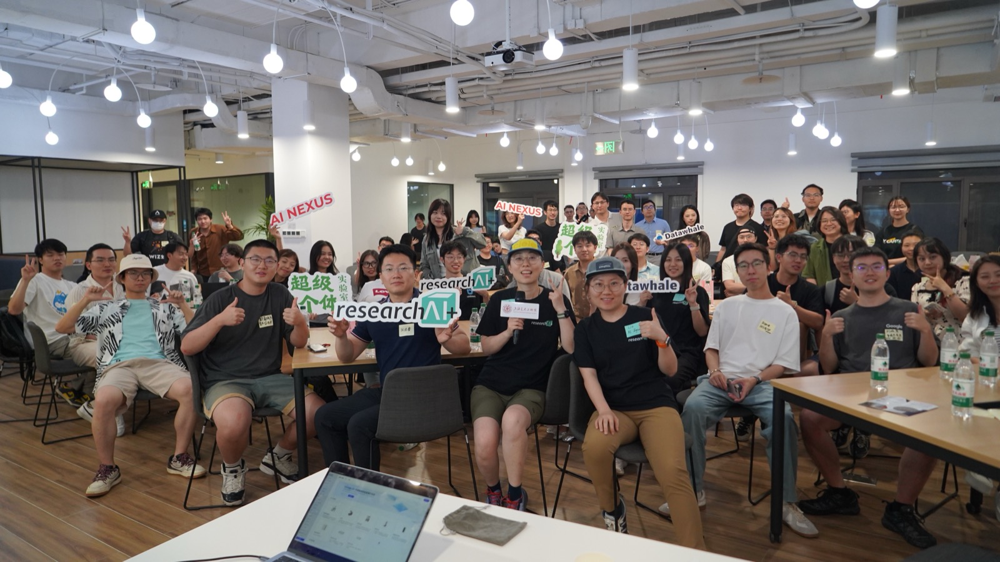
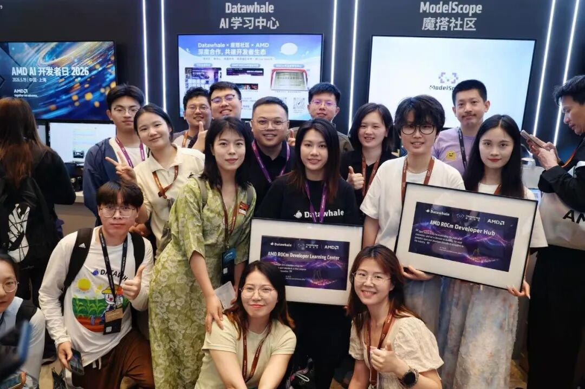
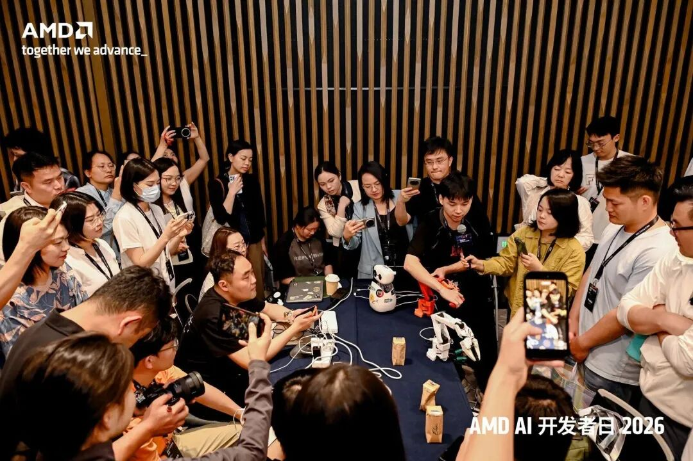
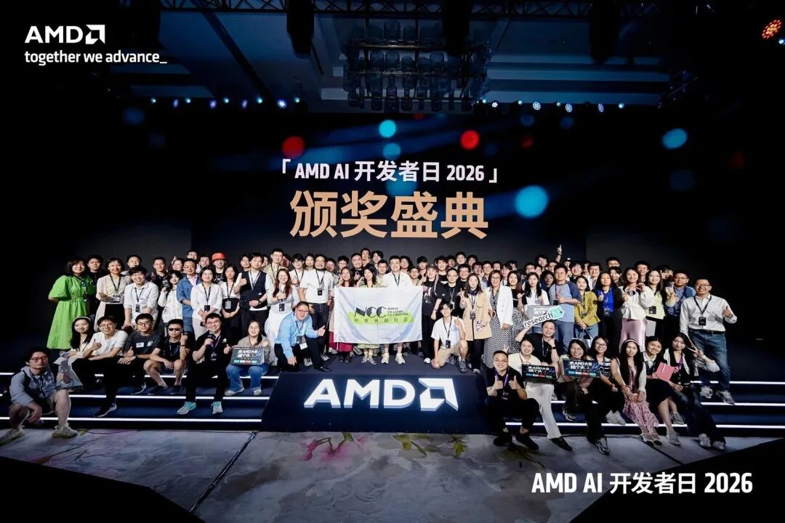
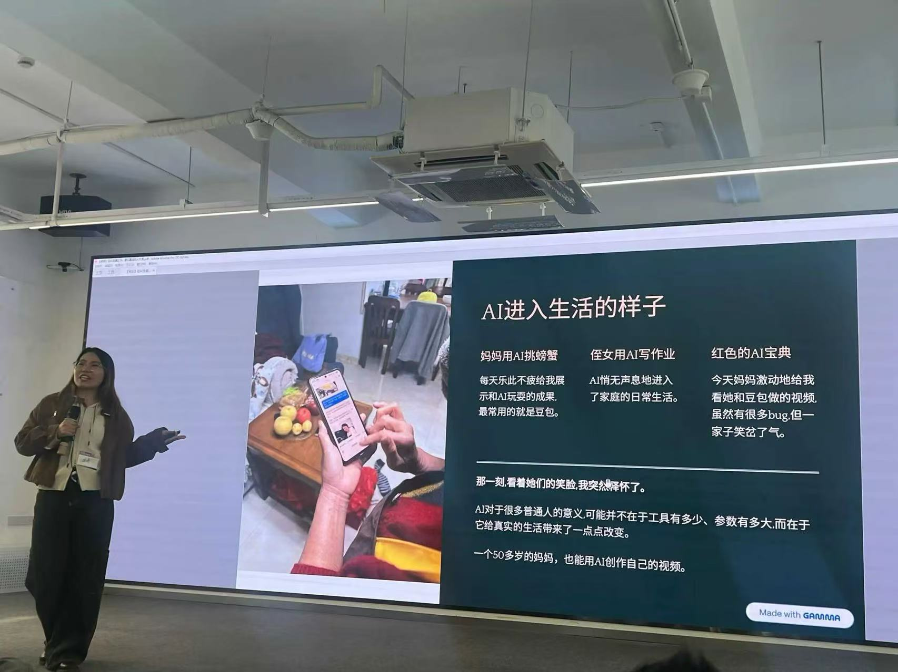

Observer
看见
进入现场，观察人和变化。
大理田野 · 早期信号
进入项目发现 ↓张婵媛（月亮） ｜ Moon
看见正在发生的生命力Seeing What’s Emerging
我从深度媒体与大理的人类学田野出发，后来走进 AI 教育、创业孵化器和开发者社区。
一路上，我总在靠近那些还没成为共识、但已经开始行动的人和项目。
0→1 超级个体实验室数百人 AI 创造者社群7 天营地真实使用
Page 02 / Proof Index
围绕 AI 创业者、创造者与新技术，我积累了三类可核对的实践。
01 Founder Ecosystem
100+ 天，从 0 到 1 聚拢 400+ AI 创造者与创业者；项目期累计连接与触达近 500 人。

超级个体实验室 →02 Storytelling
通过研究与深访，把复杂的人、技术与变化讲清楚。
View Stories →03 AI Workflow
把研究、知识管理与内容生产整理成可复用的 AI 工作流。
Explore Workflow →Super Individual Lab超级个体实验室
先筛到对的人，再让成员和主理人共同组织下一次连接。
Research AI+ 的发起者最初是社群里的活跃成员，我们一起共创了 Research AI+ 的首场活动。一年之后，我们也成为了非常密切的社区伙伴，共同组织了 WAIC After Party“第二届研究者派对之夏”。
公开可追溯场域：AI+文旅 · AI+Research · WAIC 研究者创业者派对
旗舰现场联合发起：超级个体实验室 × Research AI+ × Datawhale × AI Nexus
查看公开活动复盘 ↗
Page 03 / Ecosystem Map
从田野、教育与社区出发，持续进入 AI 创业者、开发者与研究网络。
Datawhale · 超脑 AI 孵化器 · 超级个体实验室
Research AI+ · NCC 社区 · 深圳科创学院 · …
RTE / Agora / Backchannel · BottleDream
小红书 · 真格基金 · …
腾讯研究院 · 中信出版·信睿Lab · DIIS
WAIC · 2050 · …
Page 04 / Storytelling
从理解一个人、发现水下 Founder，到进入一整个开发者与社区生态现场。
01A / Becoming · 微型生命史
以播客对谈与微型传记，进入普通人的成长经历、迷茫试错和关键节点。我们不复述成功标签，而是打开“成为”的黑箱：热爱如何被发现、验证，并在时代中逐渐长成一项愿意长期投入的事业。
看见过程，而不只看见结果。
01B / 观猹人物 · Builder Profile
4 期公开人物稿。关注非标准路径里的早期创造者：他们还没有被成功叙事定义，却已经开始做产品、写代码和验证自己的判断。
 默子 / Redink · 00 后开源 Builder ↗
默子 / Redink · 00 后开源 Builder ↗4期公开人物稿
8000+系列累计阅读
20+默子稿后的资源沟通
02 / Developer Ecosystem
我参与组建内容团队、协调现场分工，联结开发者社区与生态伙伴，设计采访方向，并把开发者、项目与社区关系沉淀成一篇完整的生态叙事。
团队组建 · 社区联结 · 现场人物发现 · 采访策划 · 内容生产与沉淀
阅读完整报道 ↗


Page 07 / AI Workflow
进入真实业务场景，理解团队原本的协作与信息流，再把重复劳动重构成可以运行、可以持续迭代的 AI 工作流程。
01 / Field Experiment · 7-day Iteration
用7天时间，搭建一个AI创造者观察记录体系
在大理 AI 营地中，老师每天需要记录学生状态，并向家长提供具体、可信的观察反馈。我将零散记录整理为一套由 AI 辅助、老师最终确认的工作流，并在七天真实使用中持续调整人机协作边界。
02 / Story → Living Archive · Secondary Case
展览会结束，但故事不应该消失。
2025 年夏天，我先做了一个很小的 Demo，想把社区里创业者一路成长的故事保存下来。真正的转折发生在随后持续的深访里：学生、家长和志愿者讲述的不只是项目结果，也包括辍学、寻找、重新行动，以及教育如何改变一个人和一个家庭。
我把这些分散的生命历程组织成章节、时间轴、菌丝关系网络与生命力地图，让人们不仅看见一件作品，也能追踪作品背后的人如何变化，以及不同的人如何在一个组织中相遇、彼此影响。
2026 年 WAIC，我与超脑团队共同策划「AI 原住民计划」线上特别展。来自不同城市、学校和机构的 44+ 个青少年项目来到现场；展览通过视频、自述、个人网页与 GitHub，把一次性的展台继续延伸为可以长期访问、持续更新的创造者档案。
Public Field / Selected
从大型舞台、研究工作坊到普通人的生活案例，把 AI 创新教育、创业者生态与真实生活中的变化，转译成不同人能够共同进入的问题。




「人文不做旁观者」连接人文探索、设计创新、社会实践与 AI 创造者。
Page 09 / Notes from the Field
项目之外，我也持续记录自己在现场形成的判断：什么值得被讲述，真实问题怎样改变一个原型，以及 AI 时代的人如何学习、创造并彼此支持。
01 / Storytelling · Judgement
“先有真实，再有叙事。”
好的 Storyteller 首先需要辨别：一个创始人的信念、一个产品解决的问题、一群人聚在一起的动因，究竟是否真实存在。叙事可以放大价值，也可能用漂亮语言填补空洞；为谁讲故事，本身就是价值判断。
在 AI 时代，重新理解 Storytelling ↗Page 10 / What’s Next
我希望继续站在 AI 创业、创造者生态与 Storytelling 的交汇处，发现并支持那些还没有成为共识、但正在认真创造新可能的人。
我想把研究、叙事、社区机制与 AI workflow，放进一个更完整的支持系统里：让一次相遇不止停在活动现场，让一个项目不止停在短期传播，也让值得被看见的人和作品，拥有继续生长的机会。
Contact / 微信公众号 · 小红书 · 即刻：@流浪月亮计划
离开屏幕和现场之后，我也会走向山里、户外和路上。
徒步、雪山、旅行与在地观察，让我重新校准节奏，也提醒我保持对世界的好奇、耐心与感受力。